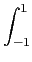

suivant: Tracé d'une conique :
monter: Les formes quadratiques
précédent: Méthode de Gauss :
Table des matières
Index
Procédé de Gramschmidt : gramschmidt
gramschmidt a un ou deux paramètres :
- une matrice vue comme une liste de vecteurs lignes,
le produit scalaire ètant le produit scalaire canonique, ou
- un vecteur contenant la base d'un espace vectoriel et une fonction qui
définit un produit scalaire.
gramschmidt donne une base orthonormale par rapport à ce produit
scalaire.
On tape :
normal(gramschmidt([[1,1,1],[0,0,1],[0,1,0]]))
Ou on tape :
normal(gramschmidt([[1,1,1],[0,0,1],[0,1,0]], dot))
On obtient :
[[(sqrt(3))/3,(sqrt(3))/3,(sqrt(3))/3],[(-(sqrt(6)))/6,(-(sqrt(6)))/6,(sqrt(6))/3],[(-(sqrt(2)))/2,(sqrt(2))/2,0]]
Exemple
Pour les polynômes de degré <n, on considère le produit scalaire
défini par :
P.Q = P(x).Q(x)dx
On tape :
gramschmidt([1,1+x],(p,q)->integrate(p*q,x,-1,1))
Ou on écrit la fonction p_scal, on tape :
p_scal(p,q):=integrate(p*q,x,-1,1)
et on tape :
gramschmidt([1,1+x],p_scal)
On obtient :
[1/(sqrt(2)),(1+x-1)/sqrt(2/3)]
Documentation de giac écrite par Renée De Graeve